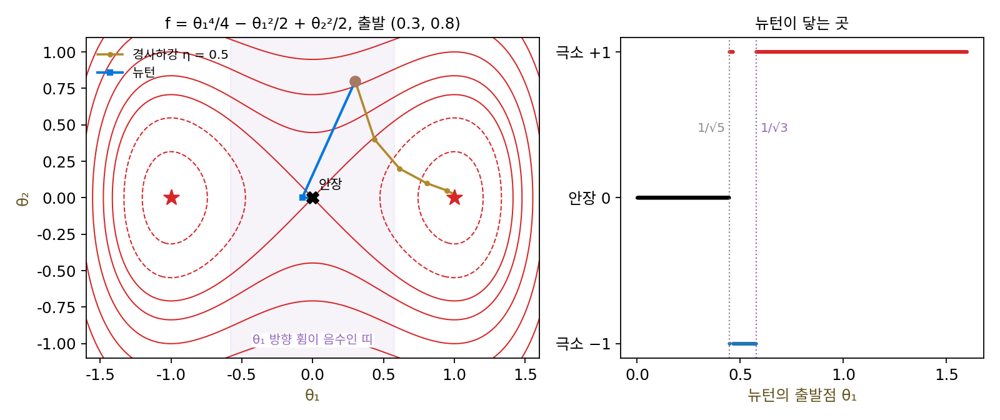

안장점: 뉴턴은 그래디언트가 0인 곳이면 어디든 간다
뉴턴 스텝은 2차 근사의 바닥으로 가는데, 2차 근사가 늘 바닥을 가진 그릇일까? 휨이 음수인 방향이 있으면 2차 근사는 그 방향으로 위로 볼록한 지붕이 되어 바닥이 없다. 그래도 뉴턴 스텝 −H⁻¹∇f는 계산된다. 뉴턴 스텝이 실제로 하는 일은 「2차 근사의 그래디언트가 0인 곳」을 찾는 것이기 때문이다. 극소점(바닥)이든 극대점(꼭대기)이든, 한쪽으로는 오르막이고 다른 쪽으로는 내리막인 고갯마루든, 그래디언트가 0이기는 마찬가지다. 신경망의 손실처럼 볼록하지 않은 지형에서 뉴턴법은 어디로 갈까?
역사: 안장을 찾는 도구로 쓴 뉴턴법
2014년 신경 정보 처리 시스템 학회(NIPS, 지금의 NeurIPS)에 「고차원 비볼록 최적화에서 안장점 문제를 찾아내고 공략하기」라는 논문이 나왔다. 지은이는 몬트리올 대학의 얀 도팽(Yann Dauphin), 라즈반 파스카누(Razvan Pascanu), 차글라르 굴체흐레(Caglar Gulcehre), 조경현(Kyunghyun Cho), 요슈아 벤지오(Yoshua Bengio)와 스탠퍼드 대학의 수랴 강굴리(Surya Ganguli)다. 그들은 신경망의 손실 지형에서 그래디언트가 0인 점들이 어떤 종류인지 직접 세어 보고 싶었다. 그래디언트가 0인 점을 찾는 데 그들이 고른 도구는 뉴턴법이었고, 논문은 그 선택을 이렇게 설명한다. 휨이 음수인 방향에서 뉴턴 스텝은 경사하강과 반대쪽, 곧 손실이 커지는 방향으로 움직이고, 휨이 양수인 방향에서는 그대로 다가가므로, 안장점은 뉴턴법에 끌어당기는 점이 된다. 그래서 뉴턴법으로는 종류에 상관없이 그래디언트가 0인 점을 모을 수 있었으니, 학습에서는 약점인 성질을 조사에서는 도구로 쓴 것이다. 같은 논문의 그림 2는 안장 5x² − y²과 원숭이 안장 x³ − 3xy² 근처에서 경사하강과 뉴턴법의 궤적을 나란히 그려, 뉴턴법이 안장에 빨려 들어가는 모습을 보였다.
두 우물 사이의 고갯마루
가장 간단한 평평한 곳은 f(x) = x³의 0으로, 1차 미분 3x²이 0이지만 극소점이 아니라 오르막이 잠시 쉬어 가는 자리다. 뉴턴 스텝은 x − 3x²/(6x) = x/2라서, 1에서 출발하면 0.5, 0.25, 0.125, …로 스텝마다 반씩 다가가 0에 붙는다. 극소점이 아닌데도 그렇다.
이 일이 바닥이 있는 지형에서 어떻게 보이는지 보려면, 바닥(극소점)이 둘이고 그 사이에 고갯마루가 하나 있는 가장 간단한 함수가 좋다. f(θ) = θ₁⁴/4 − θ₁²/2 + θ₂²/2는 (−1, 0)과 (1, 0)에 손실 −0.25인 바닥이 있고, 원점에 손실 0인 고갯마루가 있다. 원점에서 헤시안은 [[−1, 0], [0, 1]]이다. θ₂ 방향으로는 위로 휘고(휨 1) θ₁ 방향으로는 아래로 휜다(휨 −1). 말 등에 얹는 안장처럼 한 방향으로는 바닥이고 다른 방향으로는 꼭대기인 이런 점을 안장점 (그래디언트가 0이고 헤시안의 고윳값에 양수와 음수가 섞인 점 / saddle point)이라 한다. θ₁ 방향의 휨 3θ₁² − 1은 |θ₁| < 1/√3 = 0.577인 띠 안에서 음수다.
같은 출발점 (0.3, 0.8)에서 두 방법을 돌려 보자. 출발점의 손실은 0.277이다.
| 스텝 | 경사하강 (학습률 0.5) | 손실 | 뉴턴 | 손실 |
|---|---|---|---|---|
| 1 | (0.437, 0.400) | −0.006 | (−0.074, 0) | −0.0027 |
| 2 | (0.613, 0.200) | −0.133 | (0.0008, 0) | −0.0000003 |
| 3 | (0.804, 0.100) | −0.214 | (0, 0) | 0 |
| 5 | (0.996, 0.025) | −0.2497 | (0, 0) | 0 |
경사하강은 고갯마루에서 멀어져 다섯 스텝 만에 극소점 (1, 0) 근처에 닿는다. 뉴턴법은 θ₂ 방향을 한 스텝에 0으로 만들고(이 방향은 정확히 2차 함수다), θ₁ 방향으로는 극소점 θ₁ = 1과 반대쪽인 −0.074로 옮긴 뒤 세 스텝 만에 고갯마루에 정확히 앉는다. 그래디언트가 0이니 거기서 더는 움직이지 않는다.
왜 반대로 갈까? 출발점에서 θ₁ 방향의 그래디언트는 0.3³ − 0.3 = −0.273이고 휨은 3 × 0.09 − 1 = −0.73이다. 경사하강은 그래디언트의 반대쪽, 곧 +쪽으로 간다. 뉴턴 스텝은 그래디언트를 휨으로 나눈 것의 반대쪽인데, 휨이 음수라서 나누는 순간 부호가 뒤집혀 −쪽으로 간다. 헤시안의 고유 방향마다 적으면 이렇다.
λᵢ > 0인 방향에서는 두 스텝의 부호가 같지만, λᵢ < 0인 방향에서는 뉴턴만 부호가 뒤집혀 오르막으로 간다. 그래서 휨이 음수인 방향이 있는 곳에서 뉴턴은 내려가는 대신 그래디언트가 0인 곳을 향해 간다. 출발점의 θ₁만 바꿔 가며 뉴턴이 어디에 닿는지 보면, |θ₁|이 1/√5 = 0.447보다 작은 곳에서는 모두 고갯마루로 가고, 0.447과 0.577 사이에서는 두 극소점 θ₁ = −1과 +1을 들쭉날쭉 오가며, 0.577보다 바깥에서는 가까운 극소점으로 간다.

ML에서: 휨이 음수인 방향을 다루는 법
볼록하지 않은 손실에 뉴턴법을 그대로 쓰면 안장점에 끌려간다는 것은 2차 방법을 신경망에 쓰려는 사람이 먼저 넘어야 할 벽이다. 오래 써 온 방법은 헤시안의 대각 칸에 양수 α를 더해 H + α𝐈로 나누는 것이다(𝐈는 대각 칸이 1인 단위 행렬). 모든 고윳값에 α가 더해지므로 α가 가장 음수인 고윳값보다 크면 모든 방향의 휨이 양수가 되고, α가 아주 크면 학습률 1/α의 경사하강에 가까워진다. 스텝의 길이를 미리 정한 반지름 안으로 묶는 「신뢰 영역」 방법도 같은 뜻이다. 도팽과 동료들은 한 걸음 더 나아가, 음수 고윳값의 부호를 뒤집어 고윳값의 절댓값 |λᵢ|로 나누는 「안장 없는 뉴턴(saddle-free Newton)」을 냈다. 휨이 큰 방향은 짧게, 작은 방향은 길게 가는 뉴턴 스텝의 장점은 남기고 스텝의 방향은 늘 내리막이 되게 한 것이다. 이 방법이 두 우물에서 어떻게 움직이는지는 아래 문제 9에서 계산한다.
문제 7. 고갯마루의 쉼터
등산 앱이 「기울기가 0인 곳은 쉬기 좋은 평지」라며 한 지점으로 안내했는데, 그 지점과 동서남북 100 m 떨어진 네 지점의 높이(m)는 다음과 같다. 가운데 800, 동 780, 서 780, 북 810, 남 810. (가) 동서 방향과 남북 방향의 휨(높이의 2차 미분)은? (나) 이 지점은 골짜기 바닥인가, 봉우리인가, 다른 무엇인가? (다) 이 지점에서 조금 벗어나 걷기 시작하면, 계속 내려가는 쪽으로만 걸을 때 어디에 이르겠는가?

가운데가 800이고 동서가 780이니까 둘레보다 높아요. 봉우리네요. 앱이 꼭대기로 안내했어요.

남북 두 지점도 그런가요?

남북은 810이라 가운데보다 높아요. 동서로는 봉우리인데 남북으로는 골짜기예요. 휨은 동서가 (780 − 1600 + 780)/100² = −0.004, 남북이 (810 − 1600 + 810)/100² = +0.002예요.

휨의 부호가 방향마다 다르니까 바닥도 꼭대기도 아니고 안장점이야. 등산로로 말하면 두 산 사이를 넘는 고개. 기울기가 0인 것만 보면 바닥, 꼭대기, 고개를 가를 수 없어.

(다)는요? 고개에서 아래로만 걸으면요?

남북으로 가면 오르막이니까 동이나 서로 내려가게 돼요. 고개는 내려가는 사람에게는 잠깐 머무는 곳이지 끝이 아니에요. 그런데 앱처럼 「기울기가 0인 곳」을 목표로 잡고 그리로 가는 방법은 고개를 도착지로 알 거예요. 뉴턴 스텝이 그런 방법이고요.

시험 범위 중에 막히는 단원에서 「여기가 내 한계」라고 쉬어 버리는 거랑 비슷하네요. 다른 쪽으로 돌아가면 더 내려갈 길이 있는데요.
문제 8. 원숭이 안장
f(θ) = θ₁³ − 3θ₁θ₂²(원숭이 안장: 내려가는 골이 셋이라, 원숭이가 앉으면 두 다리와 꼬리를 걸칠 수 있다고 해서 붙은 이름)의 원점은 그래디언트와 헤시안이 모두 0이다. (가) (0.6, 0.2)에서 뉴턴 스텝을 네 번 계산하라. (나) 같은 곳에서 학습률 0.1의 경사하강은 어떻게 되는가? (다) 뉴턴 스텝은 왜 이 꼴이 되는가? (풀어 본 뒤 위젯 3의 「문제 8 불러오기」로 확인해 보자.)
돌려 보니 뉴턴은 (0.3, 0.1), (0.15, 0.05), (0.075, 0.025), (0.0375, 0.0125)예요. 스텝마다 반씩 원점으로 가요. 원점이 답이네요.
원점의 손실은 얼마고, 그 둘레에는 손실이 더 낮은 곳이 있나요?

원점은 0인데… 경사하강을 돌리니 (0.504, 0.272), (0.45, 0.354), (0.427, 0.450)을 지나 열 스텝째 (3.18, 5.50)에서 손실 −257, 열두 스텝째는 −176만이에요. 손실이 끝없이 내려가는 방향이 있어요. 원점은 극소점이 아니었어요.
출발점의 헤시안 고윳값이 −3.79와 +3.79야. 한 방향은 아래로 휘어 있으니 뉴턴은 그 방향에서 오르막으로 가. 그런데 반씩 줄어드는 건 신기하다. x³에서도 뉴턴 스텝이 x/2였는데.

두 함수의 공통점이 뭘까요? θ를 두 배로 늘리면 손실은 몇 배가 되죠?

둘 다 모든 항이 3차라서 θ를 두 배 하면 손실이 8배예요. 그러면 그래디언트는 2차, 헤시안은 1차 동차식이라 H(θ)θ = 2∇f(θ)가 늘 성립해요. 그래서 −H⁻¹∇f = −θ/2이고, 어디서 출발하든 정확히 반씩 원점으로 가요. 뉴턴은 휨이 위로든 아래로든 「그래디언트 0인 곳」만 보고 간다는 걸 −θ/2라는 스텝이 그대로 보여 주네요. 오일러의 동차함수 정리가 여기서 나올 줄은 몰랐어요.

도팽 논문 그림 2가 바로 이 원숭이 안장이었죠. 경사하강은 골 하나로 빠져나가고 뉴턴은 가운데로 빨려 들어가고요.
문제 9. 안장 없는 뉴턴
두 우물 f(θ) = θ₁⁴/4 − θ₁²/2 + θ₂²/2에서 (0.3, 0.8)을 출발점으로, 고유 방향마다 그래디언트 성분을 고윳값의 절댓값 |λᵢ|로 나눈 만큼 옮기는 「안장 없는 뉴턴」을 쓴다. (가) 첫 스텝 뒤의 자리는? (나) 일곱 스텝 동안 손실은 어떻게 바뀌는가? (다) 이 방법에서 조심할 곳은? (풀어 본 뒤 위젯 3의 「문제 9 불러오기」로 확인해 보자.)
θ₁ 방향은 그래디언트 −0.273, 휨 −0.73이니까 절댓값 0.73으로 나누면 스텝이 +0.374예요. 첫 스텝 뒤 (0.674, 0)이고 손실 −0.176이에요. 이번엔 극소점 (1, 0) 쪽으로 갔어요. 그다음은… (1.688, 0)? 손실이 0.605로 올라갔어요.
0.674에서 θ₁ 방향의 휨은 얼마죠?
3 × 0.674² − 1 = 0.363이에요. 그래디언트는 0.674³ − 0.674 = −0.368이고요. 0.363으로 나누면 스텝이 1.01이라 극소점 θ₁ = 1을 훌쩍 넘었어요.
출발점과 0.674 사이에 휨이 0이 되는 1/√3 = 0.577이 있어. 그 근처에서는 고윳값이 0에 가까우니까 그걸로 나누면 스텝이 터무니없이 커져. 셋째 스텝부터는 1.274, 1.069, 1.006으로 돌아와서 일곱 스텝째 1.000에 닿긴 하지만.
그럼 고윳값이 0에 가까운 곳에서 스텝을 막으려면 어떻게 하면 될까요?

나누는 수가 너무 작아지지 않게 아래를 받쳐야 해요. |λᵢ| 대신 |λᵢ|와 정해 둔 작은 양수 가운데 큰 것으로 나누거나, 스텝의 길이를 반지름 안으로 묶거나요. 안장 없는 뉴턴은 스텝의 방향을 고쳤을 뿐이고, 휨이 0 근처인 곳의 스텝 길이는 따로 다뤄야 하는 거예요. 0으로 나누는 문제는 분모가 0에 가까울 때 이미 시작된다는 걸 수치해석 시간에 배웠어요.
도팽 논문도 안장 없는 뉴턴을 스텝 길이를 묶는 신뢰 영역의 꼴로 이끌어 냈다고 했으니, 이 문제를 알고 있었던 거네요. 운전으로 치면 핸들 방향은 고쳤는데 브레이크는 따로 밟아야 하는 거예요.